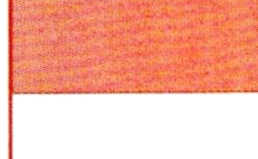
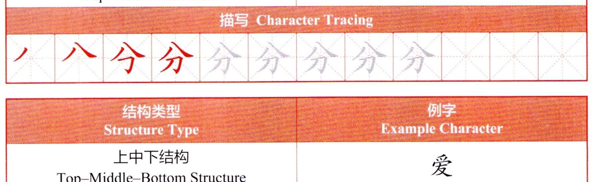
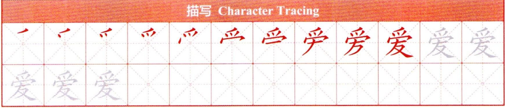

the ending intonation often lengthened or stressed. An imperative sentence makes a request or issues a command, typically ending with a falling intonation.конечная интонация часто удлиняется или выделяется. Повелительное предложение выражает просьбу или отдает приказ, обычно заканчиваясь нисходящей интонацией.
听录音，辨别听到的是陈述句还是疑问句。陈述句用A标出，疑问句用B标出，并大声朗读。Listen and identify whether each sentence you hear is declarative or interrogative. Markdeclarative sentences with A and interrogative sentences with B, then read aloud.Прослушайте и определите, является ли каждое услышанное предложение повествовательным или вопросительным. Отметьте повествовательные предложения буквой A, а вопросительные — буквой B, затем прочтите вслух.
汉字书写（七）Chinese Character Writing (VII)Написание китайских иероглифов (VII)
1学练合体字结构Compound Character Structure PracticeПрактика структуры составных иероглифов
结构类型Structure TypeТип структуры
例字Example CharacterПример иероглифа
上下结构Top-Bottom StructureСтруктура «верх-низ»
分
描写Character TracingПрописи

结构类型Structure TypeТип структуры
例字Example CharacterПример иероглифа
上中下结构Top-Middle-Bottom StructureСтруктура «верх-середина-низ»
描写Character TracingПрописи
